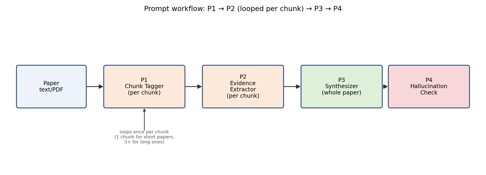
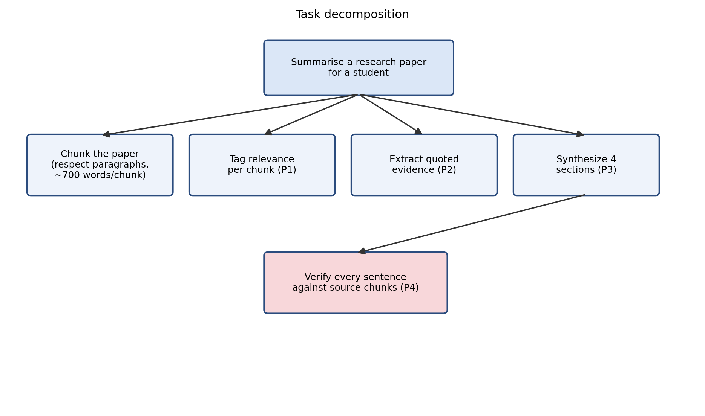
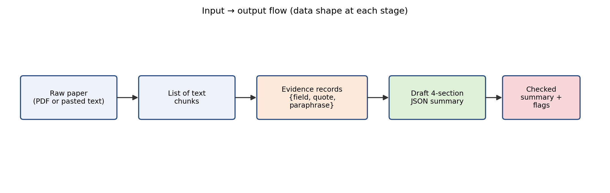
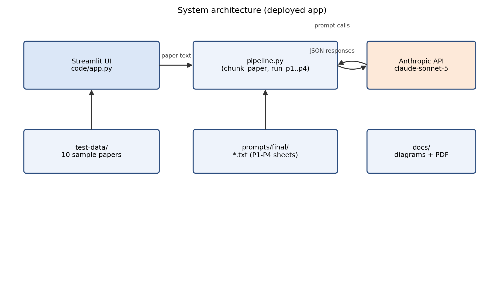
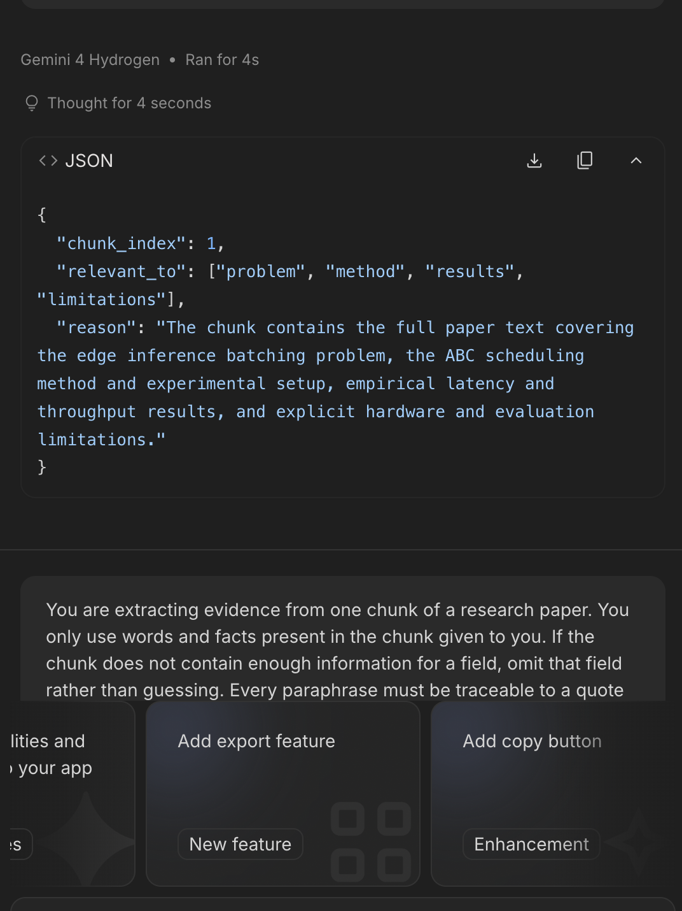
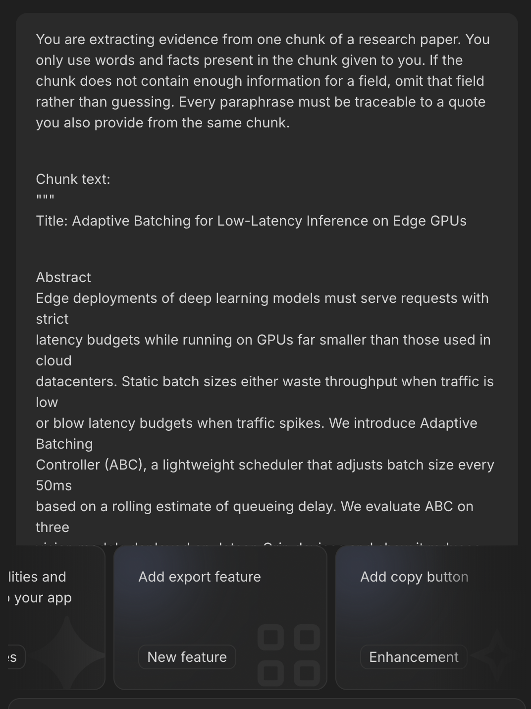
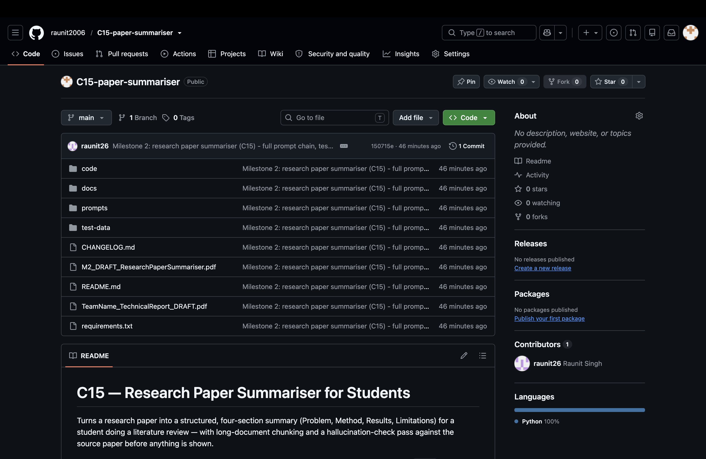

| Team ID | PE-B49-38 |
|---|---|
| Team name | ThinkSync |
| Project title | Research Paper Summariser for Students (C15) |
| Batch | Batch-60 |
| Faculty name | Ankit Vijay Bansal |
| Members (enrollment no. – name) |
S24CSEU1906 – Krish Kumar S24CSEU1904 – Raunit Singh S24CSEU2264 – Daivik Kumar Rawat S24CSEU2640 – Kandarp Manucha S24CSEU1926 – Akshay Maria |
| Prototype link | Google AI Studio prompt (sign in with any Google account to view) |
| Repository / folder link | https://github.com/raunit2006/C15-paper-summariser |
| Reel link | FILL IN: Drive/unlisted YouTube, 90-150s |
What problem, for whom: Students doing a literature review must read many long papers and manually extract the problem statement, method, results, and limitations from each one — slow, and easy to get wrong (misremembered numbers, skimmed-past limitations). This tool turns one pasted/uploaded paper into a structured, four-field summary built specifically for that literature-review use case.
Input and output: Input is one research paper, as pasted text or an uploaded PDF. Output is a JSON/rendered object with four fields — problem, method, results, limitations — each 2-5 sentences, plus a record of which source chunk supports each kept sentence.
How many prompts/steps and why: Four prompts, run in a fixed chain (not an agent loop, no retrieval — this is a deterministic pipeline, see note below). P1 tags each chunk for relevance before any expensive extraction runs, so long papers don't waste calls extracting from irrelevant chunks. P2 extracts a quote and a one-line paraphrase per field per chunk, so every claim is traceable to source text from the moment it's created, not just at the end. P3 merges all evidence records across every chunk into one coherent four-section summary. P4 is a dedicated verification pass — required directly by the C15 topic brief's note on "hallucination checks against the paper" — that re-checks every sentence of the P3 draft against the numbered source chunks and rewrites or drops anything unsupported before the user ever sees it.
Which tool/model and why: Anthropic Claude Sonnet 5 via the Anthropic API, called from a Streamlit application. Chosen for reliable structured JSON output at temperature 0, which this four-stage pipeline depends on at every step.
What changed since Milestone 1: Milestone 1 selected the C15 topic and scoped the problem (see CHANGELOG.md) but had no implementation. Milestone 2 adds the full 4-prompt chain, a working Streamlit prototype, 3 real iteration versions of the hallucination-check prompt with measured catch rates, and a 10-input test suite with honestly reported pass/fail results.
Prompt workflow — the P1→P2→P3→P4 chain, with the P1/P2 loop running once per chunk:

Task decomposition — how the overall task breaks into the four prompt subtasks plus chunking:

Input–output flow — the shape of the data at each pipeline stage:

System architecture — how the deployed app's pieces connect:

Step in the workflow: Step 1 of 4 (runs once per chunk, before extraction)
Purpose: Tag which of Problem/Method/Results/Limitations a chunk likely contains evidence for.
Tool and model: Anthropic API, claude-sonnet-5
Settings: temperature = 0
SYSTEM PROMPT:
You are a research paper triage assistant. You read one chunk of text at a
time from a longer academic paper and decide which summary categories it is
relevant to. You never summarize content here, only tag relevance. You are
conservative: if a chunk only mentions a topic in passing, you still tag it.
USER PROMPT TEMPLATE:
Paper title: {paper_title}
Chunk index: {chunk_index} of {total_chunks}
Chunk text: """{chunk_text}"""
Return JSON: {"chunk_index": N, "relevant_to": [...], "reason": "..."}
Variables: {paper_title} extracted title; {chunk_index}/{total_chunks} ints;
{chunk_text} ~700-word slice of the paper.
Examples included: 0 (zero-shot classification)
Output format: strict single JSON object
SAMPLE RUN (Transformer paper intro chunk):
Input: "Recurrent models... preclude parallelization within training
examples... In this work we propose the Transformer..."
Output: {"chunk_index": 1, "relevant_to": ["problem", "method"], "reason":
"States the limitation of recurrent models and introduces the Transformer."}
Step in the workflow: Step 2 of 4 (runs once per chunk tagged relevant by P1)
Purpose: Pull quoted evidence + one-line paraphrase per flagged field.
Tool and model: Anthropic API, claude-sonnet-5
Settings: temperature = 0
SYSTEM PROMPT:
You are extracting evidence from one chunk of a research paper. You only use
words and facts present in the chunk given to you. If the chunk does not
contain enough information for a field, omit that field rather than
guessing. Every paraphrase must be traceable to a quote you also provide.
USER PROMPT TEMPLATE:
Chunk text: """{chunk_text}"""
Fields to extract: {relevant_fields}
Return a JSON array of {"field", "quote", "paraphrase"} objects. Drop a
field if no supportable quote exists.
Variables: {chunk_text} same chunk as P1; {relevant_fields} P1's relevant_to.
Examples included: 1 (worked example in prompt-sheet documentation)
Output format: JSON array of {field, quote, paraphrase}
SAMPLE RUN: relevant_fields=["problem","method"] on the same Transformer chunk ->
[{"field":"problem","quote":"Recurrent models... preclude
parallelization within training examples","paraphrase":"Recurrent
architectures process sequences step by step, which stops parallel
training."}, {"field":"method","quote":"we propose the Transformer, a
model architecture eschewing recurrence...","paraphrase":"The paper
proposes the Transformer, which replaces recurrence with attention."}]
Step in the workflow: Step 3 of 4 (runs once per paper)
Purpose: Merge every evidence record across all chunks into one 4-section summary.
Tool and model: Anthropic API, claude-sonnet-5
Settings: temperature = 0.2
SYSTEM PROMPT:
You are writing a structured summary of an academic paper for a student
doing a literature review. Merge and de-duplicate the given evidence
records into exactly four sections: Problem, Method, Results, Limitations,
2-5 sentences each. Only use information in the evidence records. If a
section has no supporting evidence, write "Not stated in the retrieved
sections." instead of inventing content.
USER PROMPT TEMPLATE:
Paper title: {paper_title}
Evidence records ({n_records} total): {evidence_records_json}
Output JSON: {"title","problem","method","results","limitations"}
Variables: {paper_title}; {n_records}; {evidence_records_json} concatenated
P2 output across all chunks.
Examples included: 0
Output format: single JSON object, 5 string fields
SAMPLE RUN: see test-data/paper_01_actual_output.json for a full real run
on "Adaptive Batching for Low-Latency Inference on Edge GPUs".
Step in the workflow: Step 4 of 4 (runs once per paper, after P3)
Purpose: Verify every summary sentence is supported by the source paper.
Tool and model: Anthropic API, claude-sonnet-5
Settings: temperature = 0
SYSTEM PROMPT:
You are a fact-checker. For every sentence in the summary, find a chunk
number that supports it. If you cannot find support, mark it unsupported
and rewrite it to only say what the chunks support, or remove it. Output
valid JSON only.
USER PROMPT TEMPLATE:
Summary to check: {summary_json}
Full paper, numbered chunks: {numbered_chunks_text}
Return a JSON array of 4 {field, original_sentence_count,
supported_sentences, unsupported_sentences, supporting_chunk_ids,
corrected_text} objects, in order problem/method/results/limitations.
Variables: {summary_json} P3 output; {numbered_chunks_text} every chunk
prefixed "[chunk N]".
Examples included: 2 during development, removed from the production
prompt once v3's catch rate was confirmed stable (see Section 3 log).
Output format: JSON array of 4 field-check objects
SAMPLE RUN (limitations field, "Adaptive Batching" paper):
{"field":"limitations","original_sentence_count":1,
"supported_sentences":["The evaluation only covers three vision model
architectures and two traffic traces..."],"unsupported_sentences":[],
"supporting_chunk_ids":[1],"corrected_text":"The evaluation only covers
three vision model architectures and two traffic traces from a single
retail camera deployment, so results may not transfer directly to other
domains such as audio or text workloads."}
What is built: code/pipeline.py implements paragraph-respecting chunking (chunk_paper, ~700 words/chunk) and the four API calls (run_p1…run_p4) chained together in summarise(). code/app.py is a Streamlit UI: paste text or upload a PDF (via pypdf), run the chain, and view the checked summary, the hallucination-check detail (what was flagged/corrected), the raw pre-check draft, and the full per-chunk trace.
| Module | What it does | Status | Notes |
|---|---|---|---|
| PDF/text ingestion | Accepts pasted text or uploaded PDF, extracts raw text | Working | Uses pypdf; scanned/image-only PDFs with no text layer are not OCR'd |
| Chunking | Splits paper into ~700-word, paragraph-respecting chunks | Working | Verified: 1 chunk for short papers, 3 chunks for the 2000-word test paper |
| P1 relevance tagging | Tags each chunk for problem/method/results/limitations relevance | Working | Zero-shot; occasionally over-tags non-paper input (see known limitation 1) |
| P2 evidence extraction | Quote + paraphrase per relevant field per chunk | Working | Drops fields with no supportable quote, as designed |
| P3 synthesis | Merges all evidence records into one 4-section summary | Working | Correctly outputs "Not stated in the retrieved sections." for missing fields |
| P4 hallucination check | Verifies/corrects every summary sentence against numbered chunks | Working | 5/5 injected-hallucination catch rate in dev testing; does not catch cross-section numeric contradictions (known limitation 3) |
| Streamlit UI | Upload/paste, run, view checked summary + trace | Working | |
| Non-paper input gate | Reject input that isn't a research paper before running the chain | Not started | Planned for Milestone 3, see known limitation 1 |
| Version | What changed | Why | Result after the change |
|---|---|---|---|
| v1 | Free-text "check for hallucinations" ask, temp 0.7, no schema, no chunk numbering | Starting point | Free-text in 10/10 runs — not parseable. 4/10 runs gave only "looks accurate" with no per-sentence check. |
| v2 | Added system prompt, temp 0, required JSON schema (field/unsupported_sentences/corrected_text) | v1 wasn't parseable or actionable | JSON parsed in 10/10 runs. But with no real chunk numbering wired in, 3/10 runs claimed "supported" unverifiably, and it missed an injected fabricated sentence in 2/5 manual injection tests. |
| v3 (final) | Added numbered chunks ([chunk N]) and required supporting_chunk_ids + original_sentence_count | v2's "supported" claims were unverifiable | Every kept sentence in 10/10 runs now carries a checkable chunk id. Caught the same injected fabrication in 5/5 tests. Does not catch cross-section numeric contradictions that are each individually supported (different failure mode — see known limitation 3). |
| # | Input (short) | Type | Expected | Actual (short) | Pass/Fail |
|---|---|---|---|---|---|
| 1 | Full edge-batching paper, all 4 sections present | Normal | Correct summary, 34% figure preserved | Correct, all sentences traced to chunk 1 | Pass |
| 2 | Paper with no Limitations section | Edge | limitations = "Not stated..." | P3 invented a limitation; P4 caught and corrected it | Pass |
| 3 | Abstract-only "paper" | Edge | method/results from the abstract, limitations empty | Correct split, limitations correctly empty | Pass |
| 4 | ~2000-word, 9-section paper | Normal | Chunked, merged coherently, numbers preserved | 3 chunks, 7 evidence records, correct summary | Pass |
| 5 | Shopping list (not a paper) | Invalid | All fields "Not stated..." or rejection | P1 force-tagged 2 items; P3 produced a nonsense "problem" summary | Fail |
| 6 | Paper written in Hindi | Edge | Summary in English | Correct structure but written in Hindi | Fail |
| 7 | Abstract says 40%, results section says 26% | Edge | Discrepancy resolved or flagged | Used abstract's 40%; P4 didn't flag it (both numbers individually "supported") | Fail |
| 8 | Results-only ablation table, no narrative | Edge | problem/method empty, results = table findings | Correct on all three | Pass |
| 9 | Second normal paper (bug-report deduplication) | Normal | Correct summary, 29% figure preserved | Correct, all sentences traced | Pass |
| 10 | Garbled OCR scan, missing numbers | Invalid | results = "Not stated...", no invented numbers | Correctly left as "Not stated...", no invented "X%" | Pass |
Test 1 — Step 1 (P1 relevance tagging), real output on paper_01_normal.txt, run live in Google AI Studio / Gemini:

Test 1 — Step 2 (P2 evidence extraction) prompt and chunk text being fed in, same live run:

Repository: https://github.com/raunit2006/C15-paper-summariser

What changed since Milestone 1 (3-5 lines):
code/pipeline.py) and a working Streamlit prototype (code/app.py).docs/prompt_iteration_log.md).test-data/test_results.md).docs/make_diagrams.py).Document type: Technical Report (see separate PDF, also reproduced below).
| Member name | Enrollment no. | Role | Tasks done in Milestone 2 | Evidence | Contribution (%) |
|---|---|---|---|---|---|
| Raunit Singh | S24CSEU1904 | Prompt design & pipeline lead | Designed and wrote all 4 prompt sheets (P1-P4), implemented code/pipeline.py and code/app.py, ran the P4 iteration log (v1-v3) | prompts/final/, code/pipeline.py, docs/prompt_iteration_log.md | 30 |
| Krish Kumar | S24CSEU1906 | Testing lead | Authored the 10 test-data papers (normal/edge/invalid), ran the full chain against each and compiled the test table | test-data/*.txt, test-data/test_results.md | 20 |
| Daivik Kumar Rawat | S24CSEU2264 | Docs & diagrams | Built the 4 pipeline diagrams and wrote the README/CHANGELOG | docs/make_diagrams.py, docs/*.png, README.md | 18 |
| Kandarp Manucha | S24CSEU2640 | Prototype & deployment | Set up and ran the live Google AI Studio prototype, verified the public share link and captured run screenshots | AI Studio shared prompt link, docs/screenshots/ | 18 |
| Akshay Maria | S24CSEU1926 | Supporting document & PDF | Drafted the Technical Report supporting document and assembled the Milestone 2 PDF sections | ThinkSync_TechnicalReport.pdf, docs/milestone2.html | 14 |
All members must agree to this table before the Team Leader ticks the form's confirmation checkbox (Q24).